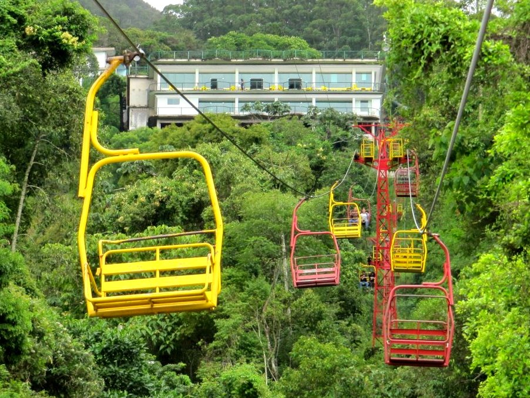
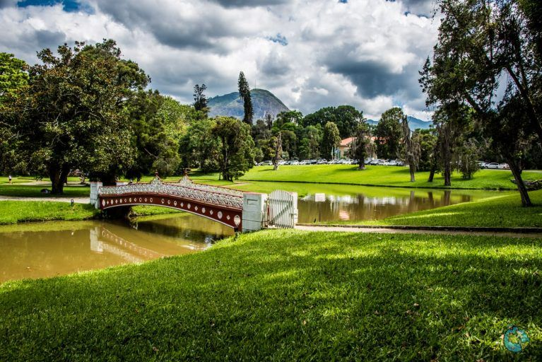
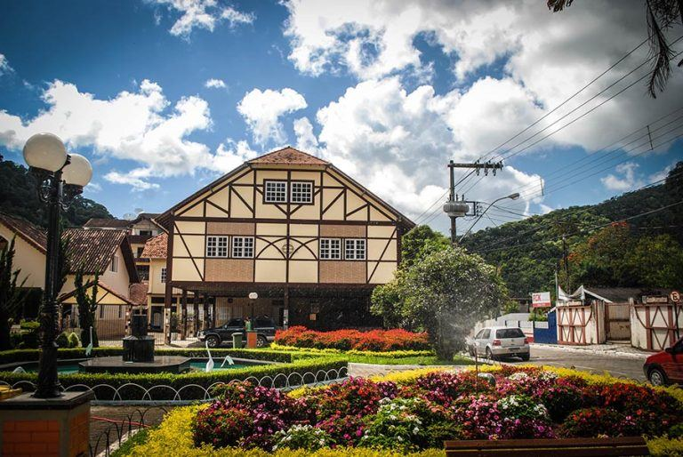
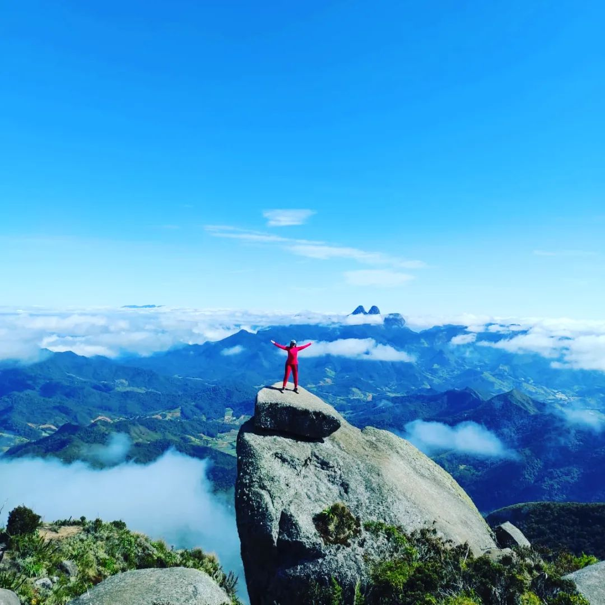
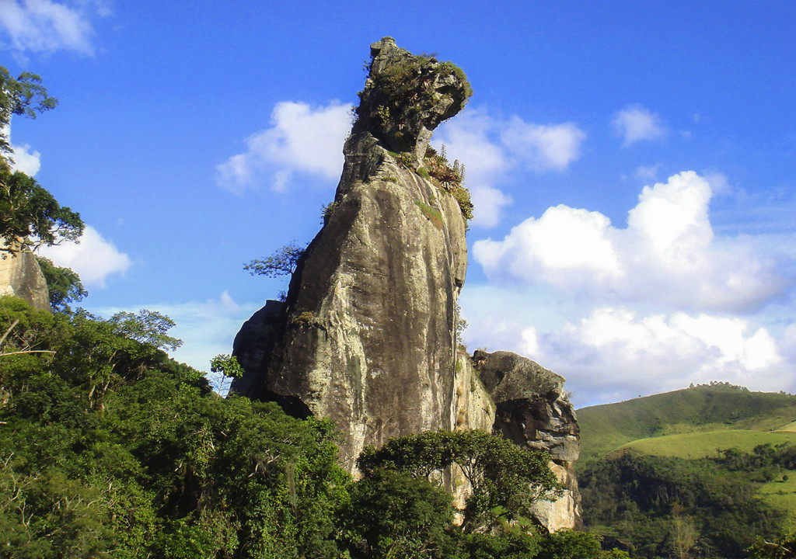

Conheça lugares incríveis que fazem de Nova Friburgo um dos destinos mais especiais da Região Serrana.
- Teleférico
- Country Club
- Lumiar
- Pico do Caledonia
- Pedra do Cão Sentado
Teleférico de Nova Friburgo oferece uma vista panorâmica incrível da cidade e das montanhas da Região Serrana, sendo uma das atrações mais visitadas pelos turistas.

O Country Club é um dos cartões-postais da cidade, destacando-se por sua arquitetura histórica, áreas verdes e importância cultural para Nova Friburgo.



